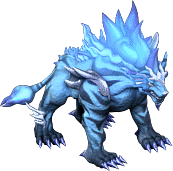

通常｜鏡之城｜迪姆萊特系｜雷歐加爾特｜斯科爾菲吉｜狀態異常防禦
名稱為橘色的是可以附魔的物品。另外，未鑑定名稱是該道具在未鑑定狀態下的名稱。
提供情報或編輯請求，請到情報提供公佈欄、編輯公佈欄。
一般
| 名稱 | 價格 | 限制 | 職業 | Wei | 取得方式 |
 涼鞋 涼鞋 | 3,000 | Lv1 | 戰修盜騎阿聖魔預吟 | 1 | 米魯里斯：雜貨店、盧亞斯：雜貨店、斯歐米：雜貨店、魔界村：雜貨店、魯克西翁：雜貨店 |
| 能力 | AC-1 DEX+2 |
| 名稱 | 價格 | 限制 | 職業 | Wei | 取得方式 |
| 涼鞋 | 3,000 | Lv1 | 戰修盜騎阿聖魔預吟 | 1 | |
| 能力 | AC-1 DEX+2 |
| 名稱 | 價格 | 限制 | 職業 | Wei | 取得方式 |
| 丹涼鞋 | 10 | Lv1 | 戰修盜騎阿聖魔預吟 | 3 | Q:摩斯退治 |
| 能力 | AC-2 DEX+1 |
| 備註 | Q:升級任務6 |
| 名稱 | 價格 | 限制 | 職業 | Wei | 取得方式 |
 皮涼鞋 皮涼鞋 | 9,000 | Lv1 | 戰修盜騎阿聖魔預吟 | 2 | 米魯里斯：雜貨店、盧亞斯：雜貨店、斯歐米：雜貨店、魔界村：雜貨店、魯克西翁：雜貨店 |
| 能力 | AC-2 DEX+4 |
| 名稱 | 價格 | 限制 | 職業 | Wei | 取得方式 |
| 皮涼鞋 | 9,000 | Lv1 | 戰修盜騎阿聖魔預吟 | 2 | |
| 能力 | AC-2 DEX+4 |
| 名稱 | 價格 | 限制 | 職業 | Wei | 取得方式 |
 便鞋 便鞋 | 12,000 | Lv1 | 戰修盜騎阿聖魔預吟 | 3 | 米魯里斯：雜貨店、盧亞斯：雜貨店、斯歐米：雜貨店、魔界村：雜貨店、魯克西翁：雜貨店 |
| 能力 | AC-4 DEX+6 |
| 備註 | 包覆腳部、保護免於障礙物傷害的鞋 |
| 名稱 | 價格 | 限制 | 職業 | Wei | 取得方式 |
| 便鞋 | 12,000 | Lv1 | 戰修盜騎阿聖魔預吟 | 8 | 特茲莫 |
| 能力 | AC-4 DEX+6 |
| 備註 | 包覆腳部、保護免於障礙物傷害的鞋 |
| 名稱 | 價格 | 限制 | 職業 | Wei | 取得方式 |
 皮鞋 皮鞋 | 33,000 | Lv1 | 戰修盜騎阿聖魔預吟 | 4 | 米魯里斯：雜貨店、盧亞斯：雜貨店、斯歐米：雜貨店、魔界村：雜貨店、魯克西翁：雜貨店 |
| 能力 | AC-5 DEX+8 |
| 名稱 | 價格 | 限制 | 職業 | Wei | 取得方式 |
| 皮鞋 | 24,000 | Lv1 | 戰修盜騎阿聖魔預吟 | 8 | |
| 能力 | AC-5 DEX+8 |
| 名稱 | 價格 | 限制 | 職業 | Wei | 取得方式 |
 木屐 木屐 | 10,000 | Lv1 | 戰修盜騎阿聖魔預吟 | 1 |  諾肯、雷德、 諾肯、雷德、 YOYO諾肯、 YOYO諾肯、 諾肯叔叔、哥布林[哥布林]、 諾肯叔叔、哥布林[哥布林]、 賽可魔瓜[賽可魔瓜]、克雷吉獨眼怪[克雷吉獨眼怪] 賽可魔瓜[賽可魔瓜]、克雷吉獨眼怪[克雷吉獨眼怪] |
| 能力 | AC-1 DEX+2 |
| 備註 | 即使在雨中也能維持移動速度。 |
| 名稱 | 價格 | 限制 | 職業 | Wei | 取得方式 |
 長筒靴 長筒靴 | 10,000 | Lv1 | 戰修盜騎阿聖魔預吟 | 1 | 賽可魔瓜[賽可魔瓜]、 安迪爾斯獨眼怪 安迪爾斯獨眼怪 |
| 能力 | AC-1 DEX+2 |
| 備註 | 不會受到暴風雨的影響 |
| 名稱 | 價格 | 限制 | 職業 | Wei | 取得方式 |
| 黃金鞋 | 5,000 | Lv11 | 戰修盜騎阿聖魔預吟 | 5 | [弗里克爾][格蘭德派斯]Q:升級任務6 |
| 能力 | AC-6 MC-10 DEX+8 |
| 備註 | 兼具堅固與易於活動的魔法鞋 |
| 名稱 | 價格 | 限制 | 職業 | Wei | 取得方式 |
| 瘋狂長靴 | 15,000 | Lv11 | 戰修阿盜騎聖魔預吟 | 7 | Q:舊硬幣 |
| 能力 | AC+3 CON+6 DEX+6 |
| 備註 | 以防禦力為代價提升能力的鞋 |
| 名稱 | 價格 | 限制 | 職業 | Wei | 取得方式 |
| 通加鞋 | 33,000 | Lv15 | 戰修盜騎阿聖魔預吟 | 4 | Q:慌張的皮耶特羅1-1 |
| 能力 | AC-3 MC-1 INT+2 WIS+3 |
| 名稱 | 價格 | 限制 | 職業 | Wei | 取得方式 |
| 厚重之鞋 | 35,000 | Lv30 | 戰修盜騎阿聖魔預吟 | 4 | Q:可愛的脫離新手 |
| 能力 | AC-5 MC-1 STR+2 DEX+6 |
| 名稱 | 價格 | 限制 | 職業 | Wei | 取得方式 |
| 皮製長靴 | 35,000 | Lv30 | 戰修盜騎阿聖魔預吟 | 4 | Q:可愛的脫離新手 |
| 能力 | AC-4 MC-2 INT+3 WIS+3 |
| 名稱 | 價格 | 限制 | 職業 | Wei | 取得方式 |
| 精神之鞋 | - | Lv40 | 戰修盜騎阿聖魔預吟 | 4 | Q:慌張的皮耶特羅3-1 |
| 能力 | AC-5 MC-2 STR+2 DEX+6 |
| 名稱 | 價格 | 限制 | 職業 | Wei | 取得方式 |
 咒文鞋 咒文鞋 | 40,000 | Lv40 | 戰修盜騎阿聖魔預吟 | 4 | Q:慌張的皮耶特羅3-1 |
| 能力 | AC-4 MC-2 INT+4 WIS+4 |
| 名稱 | 價格 | 限制 | 職業 | Wei | 取得方式 |
| 幻影長靴 | Lv51 | 戰修盜騎阿聖魔預吟 | | | |
| 能力 | AC-7 MC-11 HP+30 SP+10 STR+2 DEX+8ADDown4% MDDown2% VD：7日 |
| 備註 | 提升到極限的鞋。但是因為其強大的力量，經過時間就會消失。 |
| 名稱 | 價格 | 限制 | 職業 | Wei | 取得方式 |
| 幻影之鞋 | 75,000 | Lv51 | 戰修盜騎阿聖魔預吟 | 5 | |
| 能力 | AC-8 MC-5 HP+30 MP+30 INT+8 WIS+8ADDown2% MDDown4% VC：7日 |
| 備註 | 提升到極限的鞋。但是因為其強大的力量，經過時間就會消失。 |
| 名稱 | 價格 | 限制 | 職業 | Wei | 取得方式 |
| 德拉格雷斯長靴 | ？ | Lv51、FLv5 | 戰修盜騎阿聖魔預吟 | 5 |  隨機彩券 隨機彩券 |
| 能力 | AAR+10 SAR+10 |
| 備註 | 只追求易於活動的鞋。腳程稍微變快一點點。 |
| 名稱 | 價格 | 限制 | 職業 | Wei | 取得方式 |
| 咒術師之靴 | Lv51 | 戰修盜騎阿聖魔預吟 | 8 | 悠久天狗:滿月的櫻花村 | |
| 能力 | AC-3 MC-1 STR+1 DEX+4 HIT+1 +OP附魔 |
| 備註 | 擁有解咒之力的鞋。有2週的期限。 |
| 名稱 | 價格 | 限制 | 職業 | Wei | 取得方式 |
| 四術之靴 | Lv51 | 戰修盜騎阿聖魔預吟 | 7 | 悠久天狗:滿月的櫻花村 | |
| 能力 | AC-1 MC-3 INT+3 WIS+3 MHIT+1 +OP附魔 |
| 備註 | 擁有解咒之力的鞋。有2週的期限。 |
| 名稱 | 價格 | 限制 | 職業 | Wei | 取得方式 |
 長靴 長靴 | 1,300,000 | Lv51,FLv5 | 戰修盜騎阿聖魔預吟 | 5 | 貪婪蛋托普斯 |
| 能力 | AC-5 DEX+9 |
| 名稱 | 價格 | 限制 | 職業 | Wei | 取得方式 |
 皮塔工作者 皮塔工作者 | 73,000 | Lv51,FLv20 | 戰修盜騎阿聖魔預吟 | 4 | 皮塔 |
| 能力 | 速度上升10%（永久） |
| 備註 | 以皮塔的皮製成的鞋。腳程稍微變快一點點 |
| 名稱 | 價格 | 限制 | 職業 | Wei | 取得方式 |
| 重型防禦長靴 | 55,000 | Lv55 | 戰修盜騎阿聖魔預吟 | 4 | 赫爾西昂之箱 |
| 能力 | AC-5 MC-2 ADDown1% MDDown3% |
| 備註 | 強化後的防禦型鞋 |
| 名稱 | 價格 | 限制 | 職業 | Wei | 取得方式 |
| 重型防禦鞋 | 55,000 | Lv55 | 戰修盜騎阿聖魔預吟 | 3 | 赫爾西昂之箱 |
| 能力 | AC-3 MC-3 ADDown1% MDDown3% |
| 備註 | 強化後的防禦型鞋 |
| 名稱 | 價格 | 限制 | 職業 | Wei | 取得方式 |
| 覺醒長靴 | 0 | Lv61 | 戰修盜騎阿聖魔預吟 | 5 | 2010回歸箱 |
| 能力 | AC-6 MC-4 HP+10 DEX+10 ADDown3% MDDown2% |
| 備註 | 在30天內，可覺醒被封印能力的鞋。期間過後會消失。 |
| 名稱 | 價格 | 限制 | 職業 | Wei | 取得方式 |
| 覺醒之鞋 | 0 | Lv61 | 戰修盜騎阿聖魔預吟 | 5 | 2010回歸箱 |
| 能力 | AC-4 MC-6 MP+10 INT+5 WIS+5 ADDown2% MDDown3% |
| 備註 | 在30天內，可覺醒被封印能力的鞋。期間過後會消失。 |
| 名稱 | 價格 | 限制 | 職業 | Wei | 取得方式 |
| 守護之鞋 | 250,000 | Lv65 | 戰修盜騎阿聖魔預吟 | 6 |  寵物玩偶 寵物玩偶 |
| 能力 | AC-7 MC-11 HP+10 STR+1 DEX+9 |
| 備註 | 強化黃金鞋的鞋。感覺更加堅固 |
| 名稱 | 價格 | 限制 | 職業 | Wei | 取得方式 |
| 巫師之鞋 | 250,000 | Lv65 | 戰修盜騎阿聖魔預吟 | 5 | 寵物玩偶 |
| 能力 | AC-5 MC-3 MP+10 INT+5 WIS+5 |
| 備註 | 對咒文鞋注入魔力的鞋。提升性能與智慧 |
| 名稱 | 價格 | 限制 | 職業 | Wei | 取得方式 |
| 伊卡魯斯短靴 | 100,000 | Lv71,FLv5 | 戰修盜騎阿聖魔預吟 | 6 | Q:伊卡洛斯的孩子們-2 |
| 能力 | AC-6 DEX+10 |
| 備註 | 從伊卡洛斯的梅克特那裡得到的戰鬥型鞋 |
| 名稱 | 價格 | 限制 | 職業 | Wei | 取得方式 |
| 伊卡魯斯咒文鞋 | ? | Lv71,FLv5 | 戰修盜騎阿聖魔預吟 | 4 | Q:伊卡洛斯的孩子們-2 |
| 能力 | AC-5 MC-2 INT+4 WIS+4 |
| 備註 | 從伊卡洛斯的梅克特那裡得到的魔法型鞋 |
| 名稱 | 價格 | 限制 | 職業 | Wei | 取得方式 |
| 短靴 | 1,600,000 | Lv71,FLv15 | 戰修盜騎阿聖魔預吟 | 6 | 強力天使托普斯 |
| 能力 | AC-6 DEX+10 |
| 名稱 | 價格 | 限制 | 職業 | Wei | 取得方式 |
| 羽翼長靴 | Lv71 FLv15 | 戰修盜騎阿聖魔預吟 | 3 | 裝備彩券 | |
| 能力 | AC-5 MC-4 AAR+12 SAR+11 DEX+2 |
| 名稱 | 價格 | 限制 | 職業 | Wei | 取得方式 |
| 堅不可摧長靴 | 55,000 | Lv75 | 戰修盜騎阿聖魔預吟 | 4 | 寵物玩偶 |
| 能力 | AC-8 MC-5 DEX+1 ADDown3% MDDown4% |
| 備註 | 專門防禦的鞋 |
| 名稱 | 價格 | 限制 | 職業 | Wei | 取得方式 |
| 堅不可摧鞋 | 55,000 | Lv75 | 戰修盜騎阿聖魔預吟 | 3 | 寵物玩偶 |
| 能力 | AC-6 MC-6 INT+1 WIS+1 ADDown2% MDDown4% |
| 備註 | 專門防禦的鞋 |
| 名稱 | 價格 | 限制 | 職業 | Wei | 取得方式 |
| 幻影復仇者長靴 | 0 | Lv81 FLv15 | 戰修盜騎阿聖魔預吟 | 7 | 怪物相簿 |
| 能力 | AC-4 MC-2 HIT+3% SP+30 STR+2 DEX+6 VD：7日 |
| 備註 | 以簡易精煉魔法強化復仇者長靴的長靴。擁有更高的能力，但經過1週就會消失。耐久度100% |
| 名稱 | 價格 | 限制 | 職業 | Wei | 取得方式 |
| 祝福長靴 | ? | Lv85,FLv21 | 戰修盜騎阿聖魔預吟 | 6 |  星之記憶(星座彩券)、 星之記憶(星座彩券)、 被封印的遺物 被封印的遺物 |
| 能力 | AC-7 MC-5 HP+70 STR+2 DEX+6 (未記載：移動速度+10%) |
| 備註 | 受到神的祝福，閃耀金色光芒的鞋。 |
| 名稱 | 價格 | 限制 | 職業 | Wei | 取得方式 |
| 祝福鞋 | ? | Lv85,FLv21 | 戰修盜騎阿聖魔預吟 | 5 | 星之記憶(星座彩券)、被封印的遺物 |
| 能力 | AC-3 MC-5 HP+70 INT+4 WIS+2 (未記載：移動速度+10%) |
| 備註 | 受到神的祝福，閃耀金色光芒的鞋。 |
| 名稱 | 價格 | 限制 | 職業 | Wei | 取得方式 |
| 重型長靴 | 2,000,000 | Lv91,FLv25 | 戰修盜騎阿聖魔預吟 | 7 | [艾米斯](紫)裝備彩券 |
| 能力 | AC-7 DEX+11 |
| 名稱 | 價格 | 限制 | 職業 | Wei | 取得方式 |
 蛇鱗長靴 蛇鱗長靴 | 100,000 | Lv91,FLv21 | 戰修盜騎阿聖魔預吟 | 6 | Q:偽鍊金術的證明 |
| 能力 | AC-6 DEX+10 |
| 備註 | 以恐怖海怪的鱗片製成的鞋 |
| 名稱 | 價格 | 限制 | 職業 | Wei | 取得方式 |
| 蛇鱗鞋 | 100,000 | Lv91,FLv21 | 戰修盜騎阿聖魔預吟 | 5 | Q:偽鍊金術的證明 |
| 能力 | AC-4 MC-2 INT+4 WIS+5 |
| 備註 | 以恐怖海怪的鱗片製成的鞋 |
| 名稱 | 價格 | 限制 | 職業 | Wei | 取得方式 |
| 幻影復仇者長靴[Lv3] | Lv91,FLv30 | 戰修盜騎阿聖魔預吟 | 7 | 怪物圖鑑 不可思議的相簿箱LV4 | |
| 能力 | AC-6 MC-6 DEX+7 STR+2 INT+3 HIT+3 HP+70 SP+20 MP+20 |
| 備註 | 以簡易精煉魔法強化復仇者長靴的長靴。具備出色的能力。 |
| 名稱 | 價格 | 限制 | 職業 | Wei | 取得方式 |
| 幻影復仇者鞋[Lv3] | Lv91,FLv30 | 戰修盜騎阿聖魔預吟 | 6 | 怪物圖鑑 不可思議的相簿箱LV4 | |
| 能力 | AC-3 MC-9 INT+6 WIS5 MHIT+3 HP+70 MP+20 |
| 備註 | 以簡易精煉魔法強化復仇者鞋的鞋。具備出色的能力。 |
| 名稱 | 價格 | 限制 | 職業 | Wei | 取得方式 |
| 重型堅不可摧長靴 | ? | Lv95 | 戰修盜騎阿聖魔預吟 | ？ | 隨機彩券 |
| 能力 | AC-9 MC-6 DEX+3 ADDown4% MDDown5% |
| 備註 | 熟練的冒險家們愛用。專門防禦的最高級鞋 |
| 名稱 | 價格 | 限制 | 職業 | Wei | 取得方式 |
| 重型堅不可摧鞋 | ? | Lv95 | 戰修盜騎阿聖魔預吟 | 6 | 裝備彩券 |
| 能力 | AC-5 MC-5 INT+2 WIS+2 ADDown3% MDDown5% |
| 備註 | 熟練的冒險家們愛用。專門防禦的最高級鞋 弱化為AC-5MC-5 |
| 名稱 | 價格 | 限制 | 職業 | Wei | 取得方式 |
| 迪捷雷德長靴 | 2,080,000 | Lv95,FLv35 | 戰修盜騎阿聖魔預吟 | 7 |  芬里爾的虛像 |
| 能力 | AC-8 MC-7 HP+60 SP+30 STR+2 DEX+9 ADDown1% |
| 備註 | 據說是與神對抗的天使們所穿的長靴 |
| 名稱 | 價格 | 限制 | 職業 | Wei | 取得方式 |
| 蒂亞雷德長靴 | 2,450,000 | Lv97,FLv45 | 戰修盜騎阿聖魔預吟 | 8 | Q:赫爾西昂升級 |
| 能力 | AC-9 MC-8 HP+70 SP+40 STR+3 DEX+9 ADDown1% |
| 備註 | 強化迪捷雷德長靴的長靴 |
| 名稱 | 價格 | 限制 | 職業 | Wei | 取得方式 |
| 迪捷雷德鞋 | 2,080,000 | Lv95,FLv35 | 戰修盜騎阿聖魔預吟 | 6 | 芬里爾的虛像 |
| 能力 | AC-6 MC-4 HP+40 MP+60 INT+5 WIS+4 MDDown1% |
| 備註 | 據說是與神對抗的天使們所穿的鞋 |
| 名稱 | 價格 | 限制 | 職業 | Wei | 取得方式 |
| 蒂亞雷德鞋 | 2,450,000 | Lv97,FLv45 | 戰修盜騎阿聖魔預吟 | 7 | Q:赫爾西昂升級 |
| 能力 | AC-7 MC-5 HP+50 MP+70 INT+5 WIS+5 MDDown1% |
| 備註 | 強化迪捷雷德鞋的鞋 |
| 名稱 | 價格 | 限制 | 職業 | Wei | 取得方式 |
| 暗影長靴 | ？ | Lv98,FLv50 | 戰修盜騎阿聖魔預吟 | 11 | 暗物質核心(黃色核心) |
| 能力 | AC-9 MC-8 HP+70 SP+40 STR+4 DEX+10 ADDown1% |
| 備註 | 人們的怨念與怨嗟所形成的長靴。 |
| 名稱 | 價格 | 限制 | 職業 | Wei | 取得方式 |
| 暗影鞋 | 2,450,000 | Lv98,FLv50 | 戰修盜騎阿聖魔預吟 | 10 | 暗物質核心(黃色核心) |
| 能力 | AC-7 MC-5 HP+50 MP+70 INT+6 WIS+6 MDD1% |
| 備註 | 人們的怨念與怨嗟所形成的鞋。 |
鏡之城
長靴
| 名稱 | 價格 | 限制 | 職業 | Wei | 取得方式 |
 (遺忘)格里瑪靈長靴 (遺忘)格里瑪靈長靴 | 42,100 | Lv91,FLv31 | 戰修盜騎阿聖魔預吟 | 10 |  失去記憶的冒險者 失去記憶的冒險者 |
| 能力 | AC-8 MC-7 HP+60 STR+2 DEX+5 |
| 備註 | 完成使命、即將消失的鞋履。3天內，或死亡時消失。不可染色 |
| 名稱 | 價格 | 限制 | 職業 | Wei | 取得方式 |
| 格里馬長靴 | Lv93,FLv41 | 戰修盜騎阿聖魔預吟 | 12 |  投影的靈魂 投影的靈魂 | |
| 能力 | AC-6 MC-5 HP+60 STR+2 DEX+5 |
| 備註 | 附30天期限 不可染色 |
| 名稱 | 價格 | 限制 | 職業 | Wei | 取得方式 |
| 閃耀長靴 | Lv103,FLv51 | 戰修盜騎阿聖魔預吟 | ? | | |
| 能力 | AC-9 MC-8 HP+90 STR+3 DEX+6 |
| 備註 | 不可染色 |
| 名稱 | 價格 | 限制 | 職業 | Wei | 取得方式 |
| (忘卻)格雷亞長靴 | Lv100,FLv41 | 戰修盜騎阿聖魔預吟 | 11 | 束縛的靈魂 | |
| 能力 | AC-12 MC-11 HP+120 STR+4 DEX+7 +OP |
| 備註 | 3天期限 死亡時消失 交換時專屬 不可染色 可En |
| 名稱 | 價格 | 限制 | 職業 | Wei | 取得方式 |
| 格雷亞長靴 | Lv113,FLv61 | 戰修盜騎阿聖魔預吟 | 11 | 鏡之城升級 | |
| 能力 | AC-12 MC-11 HP+120 STR+4 DEX+7 |
| 備註 | 不可染色 可En |
便鞋
| 名稱 | 價格 | 限制 | 職業 | Wei | 取得方式 |
 (忘卻)格里馬鞋 (忘卻)格里馬鞋 | 42,100 | Lv91,FLv31 | 戰修盜騎阿聖魔預吟 | 8 | 失去記憶的冒險者 |
| 能力 | AC-6 MC-5 HP+60 INT+4 WIS+3 |
| 備註 | 完成使命、即將消失的鞋履。3天內，或死亡時消失。不可染色 |
| 名稱 | 價格 | 限制 | 職業 | Wei | 取得方式 |
| 格里馬戒指之鞋 | - | Lv93,FLv31 | 戰修盜騎阿聖魔預吟 | - | |
| 能力 | - |
| 備註 | - |
| 名稱 | 價格 | 限制 | 職業 | Wei | 取得方式 |
| 閃耀鞋 | 42,1000 | Lv103,FLv51 | 戰修盜騎阿聖魔預吟 | 10 | 鏡之城升級 |
| 能力 | AC-7 MC-6 HP+90 INT+5 WIS+4 |
| 備註 | 不可染色 |
| 名稱 | 價格 | 限制 | 職業 | Wei | 取得方式 |
| (忘卻)格雷亞鞋 | 42,100 | Lv100,FLv41 | 戰修盜騎阿聖魔預吟 | 9 | 束縛的靈魂 |
| 能力 | AC-10 MC-9 HP+120 INT+6 WIS+5 +OP |
| 備註 | 3天期限 死亡時消失 交換時專屬 不可染色 可En |
| 名稱 | 價格 | 限制 | 職業 | Wei | 取得方式 |
| 格雷亞鞋 | Lv113,FLv61 | 戰修盜騎阿聖魔預吟 | 鏡之城升級 | | |
| 能力 | AC-10 MC-9 HP+120 INT+6 WIS+5 |
| 備註 | 不可染色 可En |
迪姆萊特系
長靴
| 名稱 | 價格 | 限制 | 職業 | Wei | 取得方式 |
| 忘卻的幽光長靴 | 31,000 | Lv100,FLv71VLv41,BLv41 | 戰修盜騎阿聖魔預吟 | 12 |  黑暗突擊者 黑暗突擊者 |
| 能力 | AC-8 MC-5 HP+50 SP+20 STR+3 DEX+8 ADDown1% |
| 備註 | 加工微微發光的魔石製成的長靴 死亡時消失(不可交付、不可放地上、不可存銀行) |
| 名稱 | 價格 | 限制 | 職業 | Wei | 取得方式 |
| 幽光長靴 | 186,000 | Lv100,FLv71VLv41,BLv41 | 戰修盜騎阿聖魔預吟 | 12 | 迪奧特(塞佩利歐斯帕提姆) |
| 能力 | AC-8 MC-5 HP+50 SP+20 STR+3 DEX+8、ADDown1% |
| 備註 | 加工微微發光的魔石製成的長靴。以魔石之力強化，可升級為盧尼克套裝道具。耐久度 100％(不可放地上、使用・交付時專屬、可存銀行) |
| 名稱 | 價格 | 限制 | 職業 | Wei | 取得方式 |
| 盧尼克長靴 | - | Lv105,FLv81VLv51,BLv51 | 戰修盜騎阿聖魔預吟 | - | |
| 能力 | AC-9 MC-5 HP+70 SP+20 STR+4 DEX+8 ADDown1% |
| 備註 | - |
| 名稱 | 價格 | 限制 | 職業 | Wei | 取得方式 |
| 迪卡盧尼克長靴 | - | Lv110,FLv91VLv61,BLv61 | 戰修盜騎阿聖魔預吟 | 15 | |
| 能力 | AC-11 MC-5 HP+90 SP+20 STR+5 DEX+8、ADDown1% |
| 備註 | - |
便鞋
| 名稱 | 價格 | 限制 | 職業 | Wei | 取得方式 |
| 忘卻的幽光鞋 | - | Lv100,FLv71VLv41,BLv41 | 戰修盜騎阿聖魔預吟 | 9 | |
| 能力 | AC-5 MC-8 HP+50 MP+20 CON+2 INT+4 WIS+5 MDDown1% |
| 備註 | 加工微微發光的魔石製成的鞋 死亡時消失(不可交付、不可放地上、不可存銀行) |
| 名稱 | 價格 | 限制 | 職業 | Wei | 取得方式 |
| 幽光鞋 | - | Lv100,FLv71VLv41,BLv41 | 戰修盜騎阿聖魔預吟 | 9 | 迪奧特(塞佩利歐斯帕提姆)、塞佩利歐8 |
| 能力 | AC-5 MC-8 HP+50 MP+20 CON+2 INT+4 WIS+5 MDDown1% |
| 備註 | 加工微微發光的魔石製成的鞋。以魔石之力強化，可升級為盧尼克套裝道具。耐久度 100％(不可放地上、使用・交付時專屬、可存銀行) |
| 名稱 | 價格 | 限制 | 職業 | Wei | 取得方式 |
| 盧尼克鞋 | - | Lv105,FLv81VLv51,BLv51 | 戰修盜騎阿聖魔預吟 | 10 | |
| 能力 | AC-5 MC-9 HP+70 MP+20 CON+2 INT+4 WIS+5 MDDown1% |
| 備註 | 藉由魔石之力增強光輝的鞋，為擅長魔法攻擊的職業專用加工。耐久度 100％ |
| 名稱 | 價格 | 限制 | 職業 | Wei | 取得方式 |
| 迪卡盧尼克鞋 | - | Lv110,FLv91VLv61,BLv61 | 戰修盜騎阿聖魔預吟 | 12 | |
| 能力 | AC-5 MC-10 HP+90 MP+20 CON+2 INT+6 WIS+5、MDDown1% |
| 備註 | - |
雷歐加爾特的靈魂
長靴
| 名稱 | 價格 | 限制 | 職業 | Wei | 取得方式 |
| 忘卻的雷歐加爾特長靴 | - | Lv105,FLv71VLv21,BLv21 | 戰修盜騎阿聖魔預吟 | 14 | |
| 能力 | AC-13 MC-11 HP+151 STR+5 DEX+8 +OP附魔 |
| 備註 | 融入了雷歐加爾特之力的長靴。死亡時消失 |
| 名稱 | 價格 | 限制 | 職業 | Wei | 取得方式 |
| 被封印的雷歐加爾特長靴 | - | Lv105,FLv71VLv21,BLv21 | 戰修盜騎阿聖魔預吟 | - | |
| 能力 | - |
| 備註 | - |
| 名稱 | 價格 | 限制 | 職業 | Wei | 取得方式 |
| 雷歐加爾特長靴 | - | Lv105,FLv71VLv21,BLv21 | 戰修盜騎阿聖魔預吟 | - | |
| 能力 | AC-13 MC-11 HP+144 STR+5 DEX+8 |
| 備註 | - |
| 名稱 | 價格 | 限制 | 職業 | Wei | 取得方式 |
| （真）雷歐加爾特長靴 | - | Lv105,FLv71VLv21,BLv21 | 戰修盜騎阿聖魔預吟 | - | |
| 能力 | AC-14 MC-12 HP+158 STR+7 DEX+9 |
| 備註 | - |
便鞋
| 名稱 | 價格 | 限制 | 職業 | Wei | 取得方式 |
| 忘卻的雷歐加爾特鞋 | 39,000 | Lv105,FLv71VLv21,BLv21 | 戰修盜騎阿聖魔預吟 | 11 | |
| 能力 | AC-9 MC-8 HP+151 INT+7 WIS+6 +OP附魔 |
| 備註 | 融入了雷歐加爾特之力的鞋。死亡時消失 |
| 名稱 | 價格 | 限制 | 職業 | Wei | 取得方式 |
| 被封印的雷歐加爾特鞋 | 117,000 | Lv105,FLv71VLv21,BLv21 | 戰修盜騎阿聖魔預吟 | 11 | |
| 能力 | AC-1 MC-9 HP+70 MP+20 INT+5 WIS+5 MDDown1% +OP附魔 |
| 備註 | 融入了雷歐加爾特之力的鞋 |
| 名稱 | 價格 | 限制 | 職業 | Wei | 取得方式 |
| 雷歐加爾特鞋 | - | Lv105,FLv71VLv21,BLv21 | 戰修盜騎阿聖魔預吟 | - | |
| 能力 | AC-9 MC-8 HP+144 INT+7 WIS+6 |
| 備註 | - |